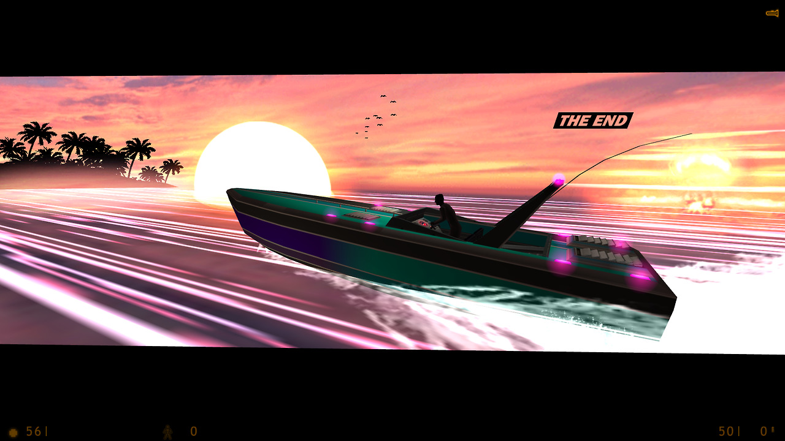

I beat that CAGED Half-Life mod! It’s really good, but really short. Though, for the low price of free, that’s not at all a bad thing.
It runs about as long, if not a little bit longer than a standard Half-Life chapter, and it does a damned good job at keeping you enthralled until it’s over. It’s almost crazy to think that a free mod you can beat in under an hour is one of the better video game experiences I’ve had all year, but here we are.
Gameplay is standard Half-Life 1 stuff. Run around, shoot dudes, solve a puzzle or two, climb through some vents. This is both a good thing and a bad thing because upon playing through this, I have come to the conclusion that the MP5 in Half-Life is a terrible weapon. The bullet spread on it is absolutely ridiculous and shooting at anyone outside of close range is a waste of ammo. You really have to utilize your other weapons to use the MP5 properly. I found myself throwing a grenade to scatter the guards, and then running in with the MP5 while they were bracing themselves.
That aside, the pacing in CAGED was just about perfect for me. The action happens in very small bite-sized chunks. There’s no fatigue that comes from constant combat, but there’s also never that much downtime that you get bored between the action bits. There’s more than enough ammo to get through, but it always feels like you could run out at any moment.
The environments are also surprisingly interesting to look at despite being mostly a grey concrete prison. I think Cayle George’s work on stuff like TF2 and Portal 2 really shine through in these aspects, especially with the humorous automated PA system that’s set up. I would be remiss to not mention the soundtrack, which is entirely composed up of Lazerhawk synthwave tracks. They add a dramatic amount of driving force to the action, to the point where I found myself over-extending in combat sessions just to keep the pace up.
I wholeheartedly recommend that everyone give this a go, it’s definitely worth an hour of your time.